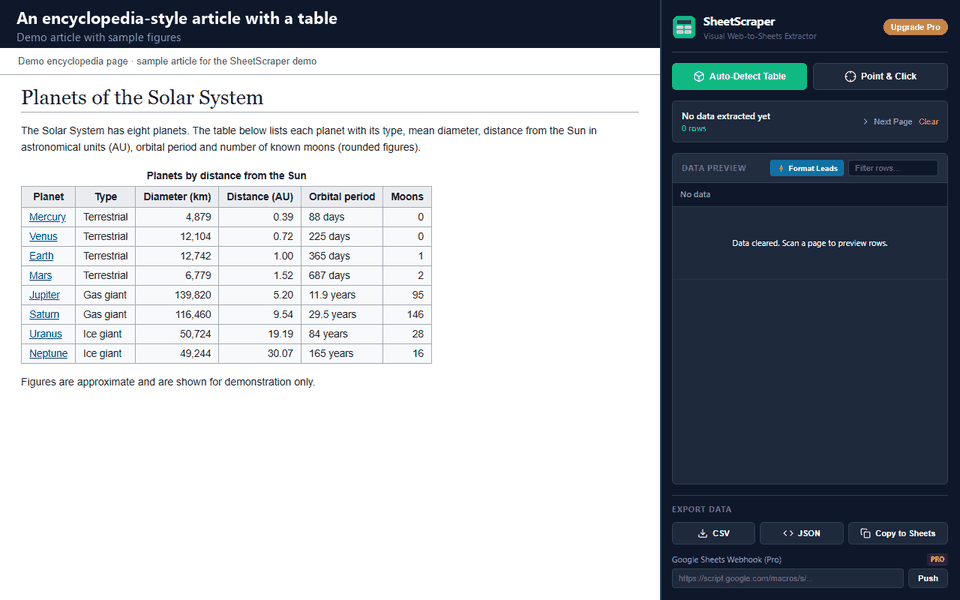

Selecting a Wikipedia table and pasting it often breaks the columns or drags in footnotes. Here are two clean ways: a formula, and a two-click extension.
Add to Chrome — free
Google Sheets can read Wikipedia tables by itself. In any cell, type:
=IMPORTHTML("https://en.wikipedia.org/wiki/List_of_largest_cities", "table", 1)
Change the last number to pick the 2nd, 3rd table and so on. The formula is free and stays linked to the page. It is a good choice when you know which table number you want. SheetScraper is quicker when an article has many tables, because you see each one before you copy it, and it works the same way on sites other than Wikipedia.
Wikipedia text is shared under the CC BY-SA licence. If you publish the data, credit Wikipedia and link to the article.
When a table cell is a link, the current version keeps the link next to the text so you do not lose it. If you only want the text, use Find and replace in Google Sheets, or wait for the column editor in the v1.1 update, now in review.
Yes. SheetScraper reads the table on the page you have open, so it works on any language edition and on other wikis.
Use IMPORTHTML when you want a live link to one known table. Use SheetScraper when you want to see the table first, pick one of many, or copy from a site where the formula does not work.
I built SheetScraper because copying tables by hand wastes an afternoon. Install it, open a page, click Auto-Detect.
Add to Chrome — free